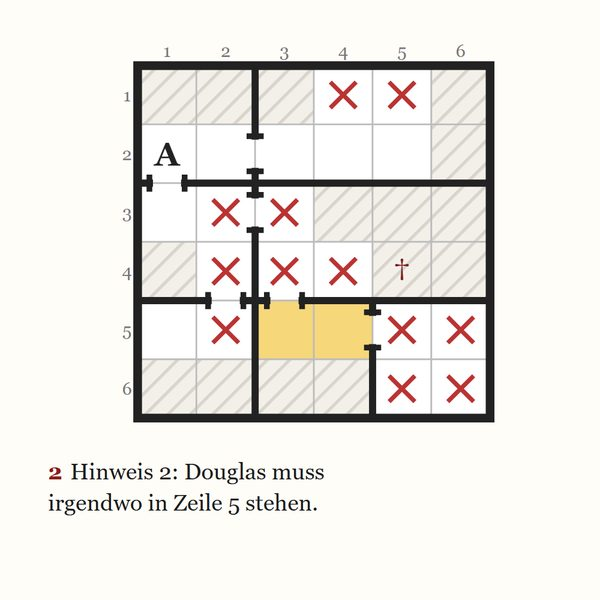
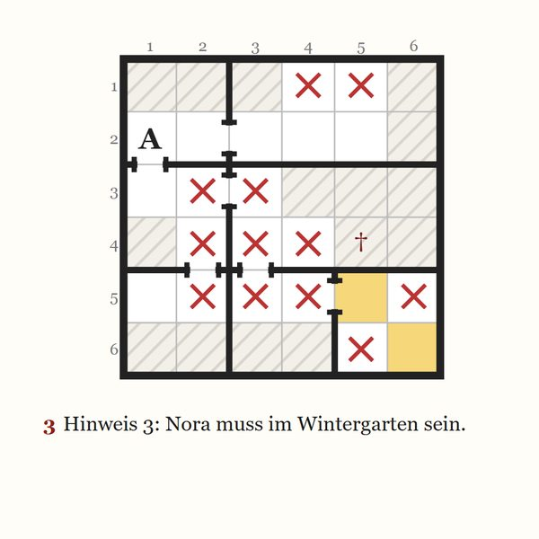
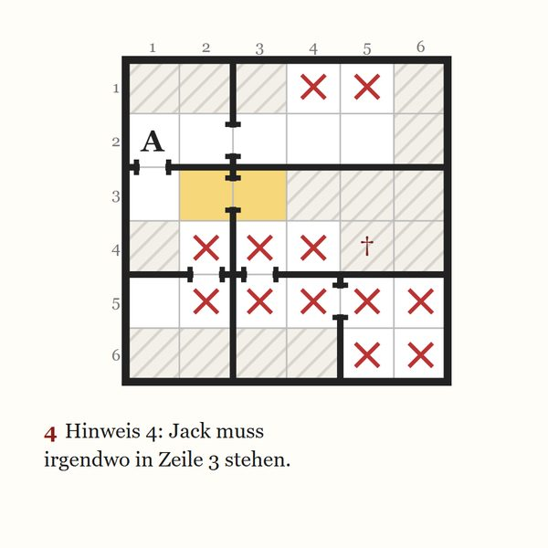
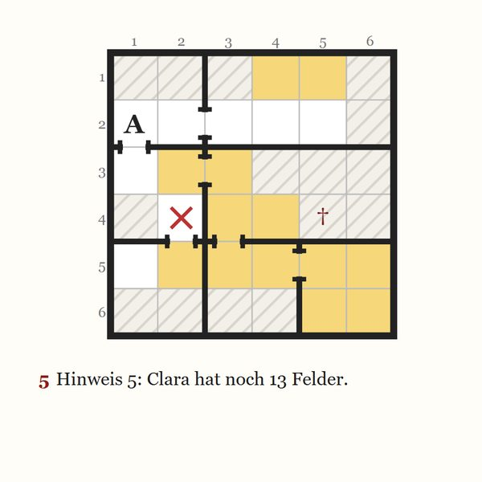
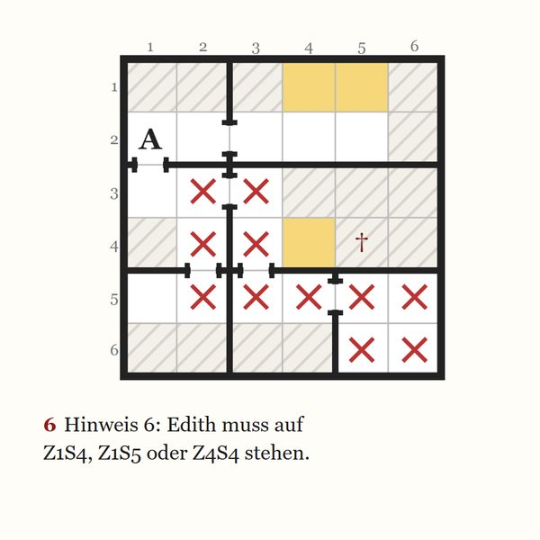
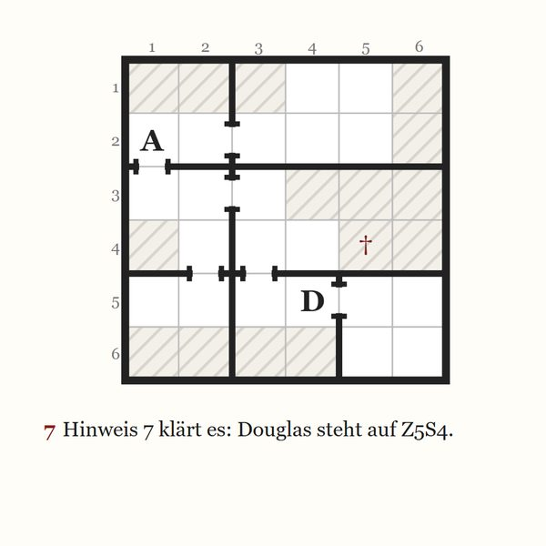
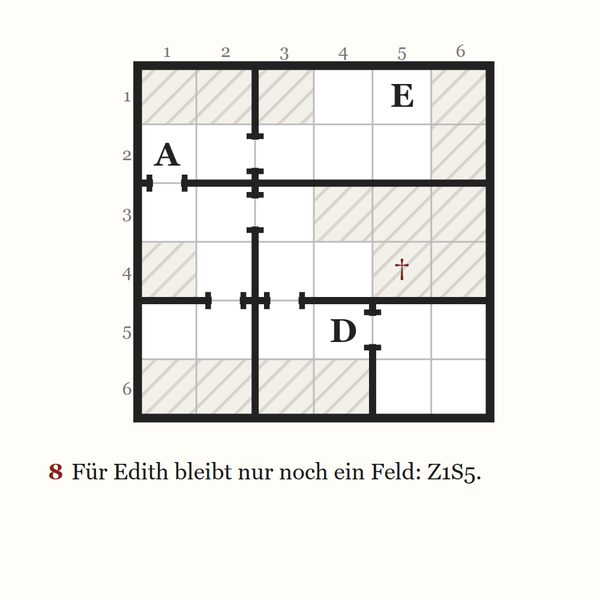
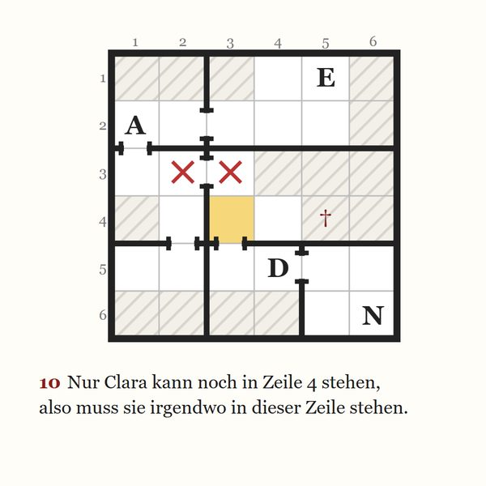
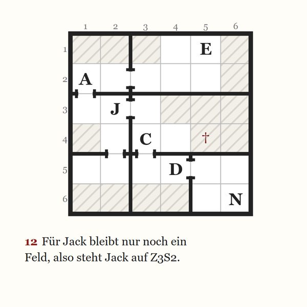
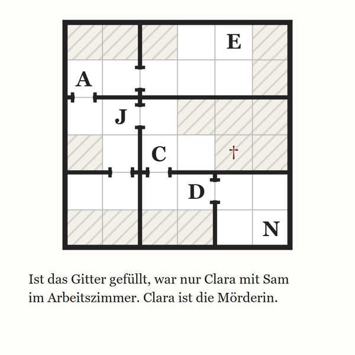

Ein Probefall aus Ashcombe Manor
Die Lösung: Ein Freitag in Ashcombe
Sieben Uhr an einem Freitag, und die Tore von Ashcombe Manor waren verschlossen. Miss Pell teilte schweigend die Karten aus, die Lampen gingen für eine Minute aus, und als sie wieder angingen, lag Sam im Arbeitszimmer.
Schritt für Schritt
Jede Folgerung, der Reihe nach
-
1. Hinweis 1 klärt es: Agatha steht auf Z2S1.
-
2. Hinweis 2: Douglas muss irgendwo in Zeile 5 stehen.

-
3. Hinweis 3: Nora muss im Wintergarten sein.

-
4. Hinweis 4: Jack muss irgendwo in Zeile 3 stehen.

-
5. Hinweis 5: Clara hat noch 13 Felder.

-
6. Hinweis 6: Edith muss auf Z1S4, Z1S5 oder Z4S4 stehen.

-
7. Hinweis 7 klärt es: Douglas steht auf Z5S4.

-
8. Für Edith bleibt nur noch ein Feld: Z1S5.

-
9. Für Nora bleibt nur noch ein Feld: Z6S6.
-
10. Nur Clara kann noch in Zeile 4 stehen, also muss sie irgendwo in dieser Zeile stehen.

-
11. Für Clara bleibt nur noch ein Feld: Z4S3.
-
12. Für Jack bleibt nur noch ein Feld, also steht Jack auf Z3S2.

Wer war es?
Ist das Gitter gefüllt, war nur Clara mit Sam im Arbeitszimmer. Clara ist die Mörderin.

Wenn ein Fall nicht reicht
Mehr Mordfälle aus Ashcombe Manor
-

Neu: Band 2
Whereabouts: Krimi-Sudoku – 50 mörderische Weihnachtsrätsel
Band 2, das Taschenbuch: zu Weihnachten eingeschneit in Ashcombe Manor, fünfzig Mordfälle und die Suche danach, wer einen Roman geschrieben hat, in dem jeder Gast vorkommt. Mit Tipps in drei Stufen für jeden Fall und allen Lösungen Schritt für Schritt.
50 Fälle · Leicht bis Experte · Taschenbuch
-

Whereabouts: Krimi-Sudoku
Das Buch: fünfzig Mordfälle aus Ashcombe Manor, mit Tipps in drei Stufen für jeden Fall und allen Lösungen Schritt für Schritt.
50 Fälle · Leicht bis Experte · Taschenbuch
-


Whereabouts: Murder Sudoku, die Tablet-Ausgabe
Das englische Buch als PDF für iPad und Tablets: fünfzig Mordfälle aus Ashcombe Manor, mit Tipps in drei Stufen für jeden Fall und allen Lösungen Schritt für Schritt.
50 Fälle · Leicht bis Experte · PDF · auf Englisch
-


Neu zu Weihnachten
Christmas at Ashcombe
Zwölf Mordfälle, einer für jeden der zwölf Tage von Weihnachten bis Dreikönig, in Ashcombe Manor im Festtagsschmuck.
12 Fälle · Leicht bis Experte · PDF · auf Englisch
-


Neu zum Advent
The Advent Casebook
Vierundzwanzig Mordfälle, einer für jeden Tag vom 1. Dezember bis Heiligabend, in Ashcombe Manor, das sich jeden Tag ein wenig mehr für Weihnachten schmückt.
24 Fälle · Leicht bis Experte · PDF · auf Englisch
-


The Beginner's Casebook
Zwölf neue Fälle für den Anfang, sechs leichte und sechs mittlere.
12 Fälle · Leicht bis Mittel · PDF · auf Englisch
-


The Expert's Casebook
Zwölf neue Fälle von Schwer bis Experte, für einen langen Abend.
12 Fälle · Schwer bis Experte · PDF · auf Englisch
-


Murder in the Dark
Zwanzig Mordfälle aus einer Halloween-Nacht in Ashcombe Manor, jeder Verdächtige im Kostüm.
20 Fälle · Leicht bis Schwer · PDF · auf Englisch